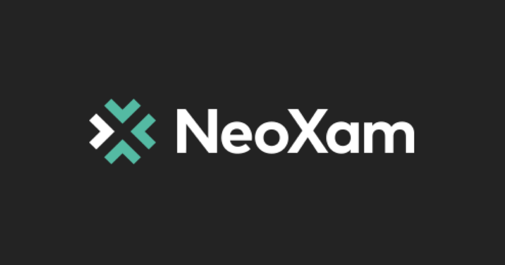

QA Engineer
I was assigned to 3 major project teams:
The first was the migration Scrum :
➔ Executed both functional and technical tests on the software.
➔ Post-migration testing and troubleshooting.
➔ Conducted post-migration automated testing.
The second was the regulatory reporting Scrum (GP3&4) :
➔ Interpreted work orders to meet client needs.
➔ Assisted in defining criteria and estimating resources needed for development backlogs.
➔ Prepared environments and example cases for testing in GP3&4.
➔ Executed manual testing and bug detection during team sprints.
➔ Prepared XML scripts and ran non-regression tests.
➔ Prepared SQL configuration scripts for consultant testing.
➔ Created reports using Jaspersoft Studio.
➔ Created and delivered itemized documentation of all work completed on projects.
The third was the Legal Scrum (DataHub) :
➔ Interpreted work orders to meet client needs.
➔ Assisted in defining criteria and estimating resources needed for development backlogs.
➔ Prepared DataHub work environments and test plans.
➔ Created financial table configurations for consultant testing.
➔ Conducted manual tests and bug detection on completed financial tables.
➔ Created and tested XML output.
➔ Created reports using Jaspersoft Studio.
➔ Created and delivered itemized documentation of all work completed on projects.
➔ Served as subject matter expert and coach to struggling co-workers.
➔ Served as consultant liaison during and post-project development.
Fresno City College
A.S. Web development
January 2023 - June 2024, Fresno, CA
Faculty of Economics and Management
M.S. Quantitative Finance
September 2015 - December 2017, Sfax, Tunisia
Master’s thesis: Brexit and passporting breakdown effects on UK banking stocks' volatility.
Faculty of Sciences of Sfax
B.S. Applied Mathematics, Finance
September 2012 - June 2015, Sfax, Tunisia
Bachelor’s thesis: Scoring du crédit à la consommation avec les méthodes Probit et Logit.
Mohamed Brahimi Mourouj 6 High School
High School Diploma
January 2008 - June 2021, El Mourouj, Tunisia
Mathematics
- Software QA
- Automated testing
- Manual Testing
- Agile
- Scrum
- XML
- SQL
- R
- C, C++
- Visual Basic
- Jaspersoft
- GP3Tester
- SoapUI
- API
- Jira
- Confluence
- English - Fluent
- French - Fluent
- Arabic - Native